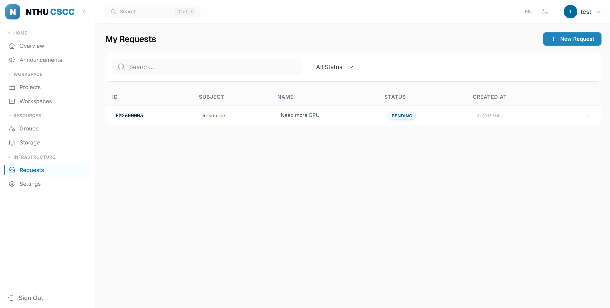

申請¶
有事要找平台管理員時，送一筆申請：加 GPU 配額、要新的儲存空間、加入群組或取得映像存取權、建議功能、回報問題。
適用對象： 所有已登入的使用者；管理員負責審核。
申請類型¶
表單上的類型標籤是英文：
| 類型 | 使用時機 |
|---|---|
| Resource | 要更多 GPU/CPU 配額、更多儲存空間，或新的資源配置 |
| Access | 加入群組、存取共用儲存空間，或取得更高的角色 |
| Feature | 建議新增平台功能 |
| Bug | 回報平台問題 |
| Question | 向管理員提問 |
| Other | 其他 |
申請狀態¶
| 狀態 | 含義 | 你可以做什麼 |
|---|---|---|
| Pending | 已送出，等待管理員 | 在訊息串補充細節 |
| Processing | 管理員處理中 | 在訊息串回答管理員的提問 |
| Completed | 已解決，訊息串關閉 | 還有需要就另外送一筆 |
| Rejected | 被退回 | 看退回原因後另外送一筆；管理員也可以重新開啟 |
送出申請¶
- 點左側選單的 申請。
- 點右上角 + 新增申請。
 圖 1：新增申請表單，含類型、標題與說明。
圖 1：新增申請表單，含類型、標題與說明。
- 填表單：
| 欄位 | 說明 |
|---|---|
| 專案 | 選填。把申請連到你的某個專案，管理員會直接看到該專案目前的 GPU 配額；選擇後旁邊會出現該專案的 GPU 進度條。 |
| 類型 | 選一個標籤：Resource、Access、Feature、Bug、Question、Other。 |
| 標題 | 一句話，例如「為 LLM-Training 專案申請 4 個 GPU 單位」。 |
| 說明 | 富文字，支援格式、程式碼區塊與內嵌圖片。可直接拖曳截圖。內嵌圖片接受 JPEG、PNG、GIF、WebP，每張最大 10 MiB。 |
- 點 提交。申請以 Pending 開始，沒有草稿功能。
寫清楚為什麼、要多少、用多久
資源申請請寫出專案、GPU 數量、使用期間與研究目的，管理員依這些判斷。
我的申請¶

圖 2：申請列表，顯示類型標籤、狀態與建立日期。申請頁面列出你送出過的所有申請：類型標籤、狀態、標題、建立日期。點一筆進入訊息串。
訊息串¶
- 點申請卡片。
- 在底部輸入框打字。
- 點 傳送。管理員的回覆會出現在同一個訊息串。
 圖 3：申請詳情頁面與訊息串。
圖 3：申請詳情頁面與訊息串。
映像申請¶
需要的 base image 不在平台允許清單時，用 Request Image 表單（從專案 Images 分頁或映像目錄進入）。
| 欄位 | 說明 |
|---|---|
| Registry | 選填，預設 docker.io。 |
| Repository | 不含 tag 的映像路徑，例如 pytorch/pytorch，或 nvidia/* 申請整個系列。 |
| Tag | 選填，預設 latest；Repository 是萬用字元時預設 *。 |
下方會即時預覽管理員看到的映像參考。核准後，該映像就能在工作區與部署表單中選用。
常見問題¶
審核要多久？
多數申請 1–2 個工作天內處理。超過三天沒回應，在訊息串追問。
送出後可以修改或取消嗎？
不行。在訊息串補充或更正。變成 Completed 後訊息串關閉，要另外送一筆。
申請被退回了，可以再送嗎？
可以。看退回原因、調整後再送一筆，說明裡提一下前一筆的編號。
申請解決了但我沒收到通知。
到 設定 → 通知 打開 推播通知。